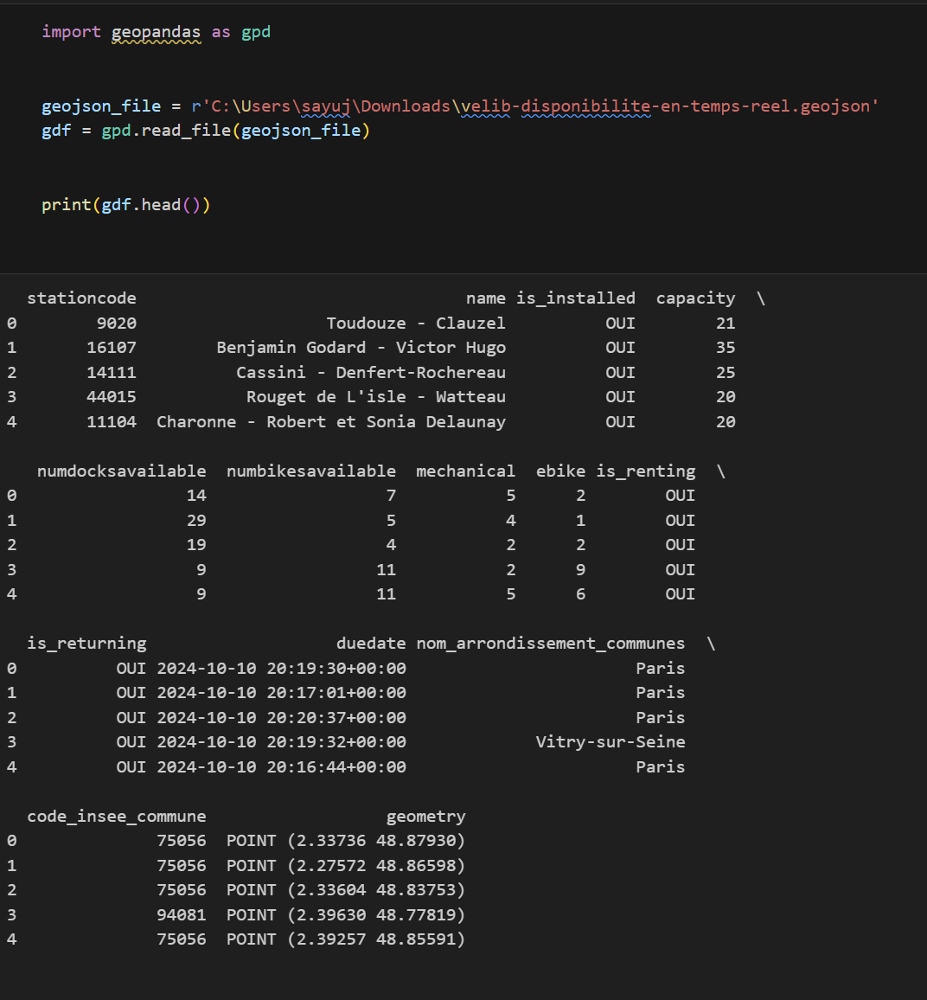
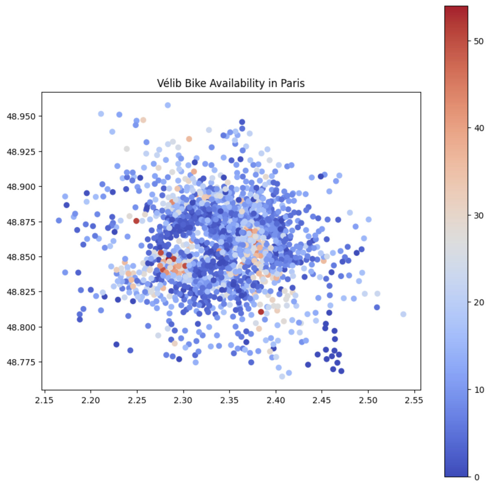
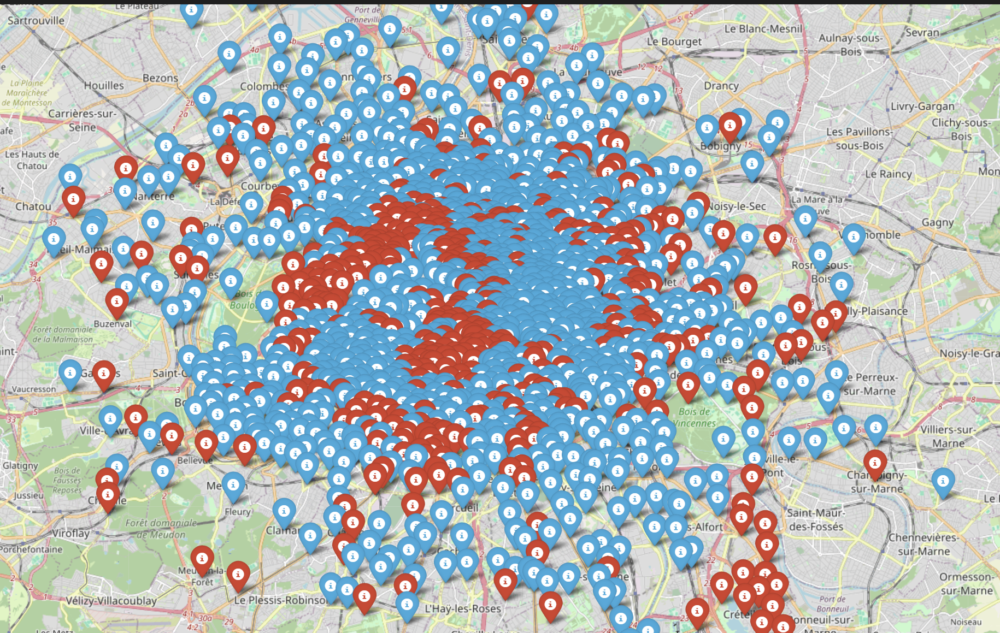
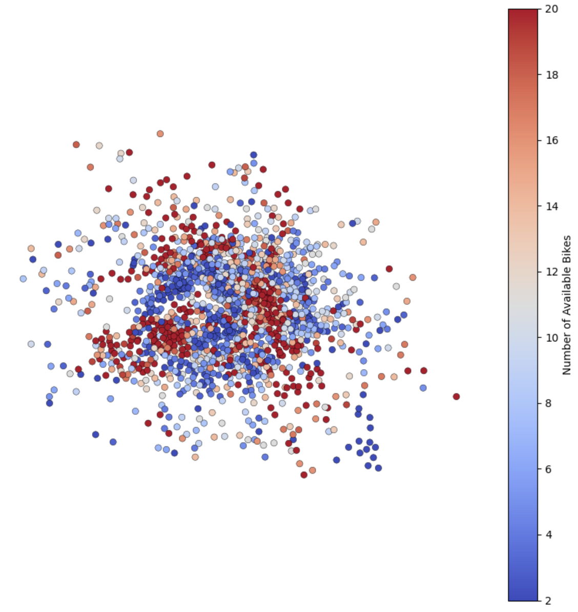

01Introduction
The use of bicycles for daily commuting in Paris has surged, especially with the rise of Vélib'. With many Parisians using bikes as a primary mode of transport to work, understanding bike availability across the city's office zones is critical. This project analyses Vélib' bikes and docking stations in key business districts: La Défense, Opéra, Montparnasse and others.
The objective is to uncover trends in bike usage and availability — helping city planners, businesses and residents optimise commuting strategies and enhance urban mobility.
02Project Objectives
- Analyse the availability of mechanical & electric Vélib' bikes across major office zones.
- Understand the distribution of docking stations and available slots.
- Track fluctuations during peak commuting hours; identify shortage areas.
- Lay the foundation for animated time-series visualisations.
03Data Contents
Real-time GeoJSON data from Open Data Paris. Each station record includes:
- Station code & name
- Operational flags — installed / renting / returning
- Docks available & bikes available
- Bike type breakdown — mechanical vs e-bike
- Geospatial — lat/lng for mapping
- Timestamp — when the snapshot was taken

04Methodology
Data collection
Loaded the Vélib feed in GeoJSON format and processed it with Python — using GeoPandas, Pandas and Folium for geospatial work and visualization.
Preprocessing
- Cleaning — removed any stations not installed or operational.
- Clipping & filtering — focused on major office zones; filtered stations by proximity using radii of influence around key districts.
Geospatial mapping
With Folium and GeoPandas I plotted every station, marking 5 km radius circles around each office zone and colour-coding stations by bike type.



Descriptive analysis
- Bike availability — totalled across all stations, split by mechanical & electric.
- Dock availability — summed for parking-capacity insight.
- Peak usage — analysed which stations spike during morning/evening rush.
05Analysis & Results
Distribution across office zones
The highest concentrations appeared near La Défense and Saint-Lazare, where commuters rely on bike rentals for the "last mile". These zones also showed the largest peak-hour fluctuations, suggesting room for better dock management.
Mechanical vs Electric
E-bikes — though fewer in number — are increasingly popular for longer commutes. Montparnasse and Opéra saw a marked morning-rush jump in e-bike usage.
06Visualizations
Built geospatial heatmaps showing the density of bike stations and real-time availability — colour-coded by bike type. Final overlay was finished in QGIS and Photoshop.

07Future Work
- Time-series animation — track availability fluctuations through the week to surface peaks & chronic shortages.
- Predictive modelling — ML models to forecast bike demand by zone and inform planning.
- Policy recommendations — guidance for city planners on station placement and rebalancing.